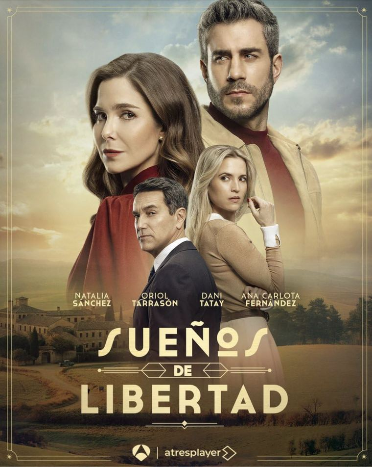
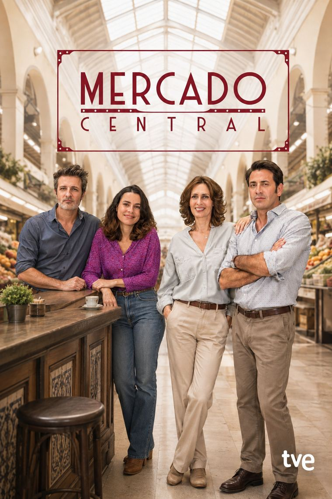

INT. PLATÓ — SERIES DIARIAS
Guionista de plató
Una figura clave y poco visible: el guionista que trabaja a pie de set, resolviendo en directo lo que el rodaje necesita para no detenerse. Creatividad a contrarreloj, todos los días.

Atresmedia · Diagonal TV
Sueños de
Libertad
Libertad
2023 — Actualidad
Sueños de Libertad Premio ALMA 2026
T1–T4 · Guionista de plató · Diagonal TV y Atresmedia · Dir. Joan Noguera · 2023 — actualidad
Guionista de plató desde el capítulo 1 de la serie líder de la sobremesa. Cuatro temporadas — y las que vienen. Por la T2, ganador del Premio ALMA al mejor guion de serie diaria.

Mediaset · Alea Media
Mía es la
Venganza
Venganza
2022 — 2023
Mía es la Venganza
T1–T2 · Guionista de plató · Creada por Aurora Guerra · Alea Media y Mediaset España · 2022–2023
Guionista de plató durante las dos temporadas de la serie, desde su estreno hasta su capítulo final (caps. 1–110).

TVE · Diagonal TV
Mercado
Central
Central
2019 — 2021
Mercado Central Nominado ALMA 2021
T1–T2 · Diagonal TV y TVE · Dir. Joan Noguera · 2019–2021
La serie donde se hizo el oficio, recorriendo el escalafón completo del equipo de guion — hasta la nominación al ALMA 2021 por la T2.
Becario de guion → Auxiliar → Guionista de plató